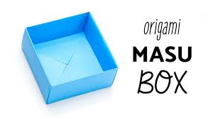
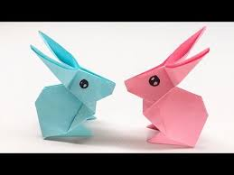
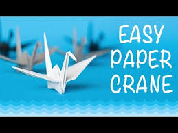
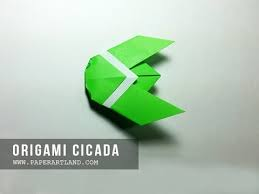

Origami Designs and Facts
Fun Facts about Origami:
- Origami is derived from two Japanese words: Ori (folded) and Kami (paper).
- Before that, the art was called orikata.
- An ancient japanese legend says that if you fold on thousand cranes, you will be granted a wish.
- The Japanese word for paper kami is the same written word as the Japanese word for spirit or god and certain origami models were part of their religious ceremonies.
- The Samurai in Japan gave each other gifts known as noshi that were paper folded with a strip of fish and were considered a good luck token
- The record for the longest flight indoors of an origami plane is 22.48 seconds - held by Takuo Toda, who is credited with inventing the paper airplane.
- The smallest origami crane in the world was made by Naito Akira folding plastic film measuring 0.1 by 0.1 mm. The largest origami crane measures 256 feet 6 inches across.
- Akira Yoshizawa is considered the Grand Master of modern origami. He created over 50,000 origami models.
Simple Origami Designs

Click the image to see the video on how to make an origami fish.

Click the image to see the video on how to make an origami pigeon.

Click the image to see the video on how to make an origami box.

Click the image to see the video on how to make an origami rabbit.

Click the image above to see the video on how to make an origami crane.

Click the image above to see the video on how to make an origami crane.
Click here to go back to the home page.